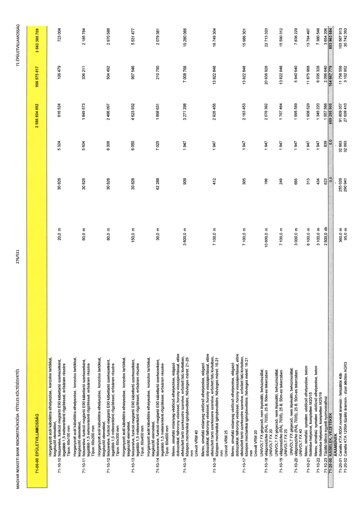

| Tétel | Menny. | Egys. | Anyag e.ár (net HUF) | Díj e.ár (net HUF) | Anyag összesen (net HUF) | Díj összesen (net HUF) | Anyag+Díj összesen (net HUF) |
|---|---|---|---|---|---|---|---|
| 71-00-00 ÉPÜLETVILLAMOSSÁG | NaN | NaN | 0 | 0 | 2 586 804 892 | 996 575 817 | 3 583 380 709 |
| Horganyzott acél kábellétra elhelyezése, konzolos tartókkal, kiegészítő elemekkel, felszerelve, funkció megtartó E90 kábeltartó szerkezetként, legalább 1,5 méterenkénti rögzítéssel, erősáram részére Típus: 60x100 mm | 0 | 0 | 0 | 0 | 0 | 0 | 0 |
| 71-10-10 | 20,0 | m | 30 826 | 5 324 | 616 524 | 106 479 | 723 004 |
| Horganyzott acél kábellétra elhelyezése, konzolos tartókkal, kiegészítő elemekkel, felszerelve, funkció megtartó E90 kábeltartó szerkezetként, legalább 1,5 méterenkénti rögzítéssel, erősáram részére Típus: 60x200 mm | 0 | 0 | 0 | 0 | 0 | 0 | 0 |
| 71-10-11 | 60,0 | m | 30 826 | 5 604 | 1 849 573 | 336 211 | 2 185 784 |
| Horganyzott acél kábellétra elhelyezése, konzolos tartókkal, kiegészítő elemekkel, felszerelve, funkció megtartó E90 kábeltartó szerkezetként, legalább 1,5 méterenkénti rögzítéssel, erősáram részére Típus: 60x300 mm | 0 | 0 | 0 | 0 | 0 | 0 | 0 |
| 71-10-12 | 80,0 | m | 30 826 | 6 306 | 2 466 097 | 504 492 | 2 970 588 |
| Horganyzott acél kábellétra elhelyezése, konzolos tartókkal, kiegészítő elemekkel, felszerelve, funkció megtartó E90 kábeltartó szerkezetként, legalább 1,5 méterenkénti rögzítéssel, erősáram részére Típus: 60x400 mm | 0 | 0 | 0 | 0 | 0 | 0 | 0 |
| 71-10-13 | 150,0 | m | 30 826 | 6 050 | 4 623 932 | 907 546 | 5 531 477 |
| Horganyzott acél kábellétra elhelyezése, konzolos tartókkal, kiegészítő elemekkel, felszerelve, funkció megtartó E90 kábeltartó szerkezetként, legalább 1,5 méterenkénti rögzítéssel, erősáram részére Típus: 60x600 mm | 0 | 0 | 0 | 0 | 0 | 0 | 0 |
| 71-10-14 | 30,0 | m | 62 288 | 7 025 | 1 868 631 | 210 750 | 2 079 381 |
| Merev, simafalú műanyag védőcső elhelyezése, elágazó dobozokkal, falihorony véséssel, horony visszajavítással, előre elkészített tartó szerkezetre szerelve, erősített falú kivitelben, közepes mechanikai igénybevételre, Névleges méret: 21-29 mm Univolt VRM 40 | 0 | 0 | 0 | 0 | 0 | 0 | 0 |
| 71-10-15 | 3 600,0 | m | 909 | 1 947 | 3 271 298 | 7 008 768 | 10 280 066 |
| Merev, simafalú műanyag védőcső elhelyezése, elágazó dobozokkal, falihorony véséssel, horony visszajavítással, előre elkészített tartó szerkezetre szerelve, erősített falú kivitelben, közepes mechanikai igénybevételre, Névleges méret: 16-21 mm Univolt VRM 25 | 0 | 0 | 0 | 0 | 0 | 0 | 0 |
| 71-10-16 | 7 100,0 | m | 412 | 1 947 | 2 926 456 | 13 822 848 | 16 749 304 |
| Merev, simafalú műanyag védőcső elhelyezése, elágazó dobozokkal, falihorony véséssel, horony visszajavítással, előre elkészített tartó szerkezetre szerelve, erősített falú kivitelben, közepes mechanikai igénybevételre, Névleges méret: 16-21 mm Univolt VRM 20 | 0 | 0 | 0 | 0 | 0 | 0 | 0 |
| 71-10-17 | 7 100,0 | m | 305 | 1 947 | 2 163 453 | 13 822 848 | 15 986 301 |
| UNIVOLT FX gégecső, nem lépésálló, behúzószállal; világosszürke (RAL 7035), 25 ill. 50m-es tekercsben UNIVOLT FX 20 | 0 | 0 | 0 | 0 | 0 | 0 | 0 |
| 71-10-18 | 10 600,0 | m | 196 | 1 947 | 2 076 392 | 20 636 928 | 22 713 320 |
| UNIVOLT FX gégecső, nem lépésálló, behúzószállal; világosszürke (RAL 7035), 25 ill. 50m-es tekercsben UNIVOLT FX 25 | 0 | 0 | 0 | 0 | 0 | 0 | 0 |
| 71-10-19 | 7 100,0 | m | 249 | 1 947 | 1 767 464 | 13 822 848 | 15 590 312 |
| UNIVOLT FX gégecső, nem lépésálló, behúzószállal; világosszürke (RAL 7035), 25 ill. 50m-es tekercsben UNIVOLT FX 40 | 0 | 0 | 0 | 0 | 0 | 0 | 0 |
| 71-10-20 | 3 000,0 | m | 665 | 1 947 | 1 995 589 | 5 840 640 | 7 836 229 |
| Merev, simafalú symalen védőcső elhelyezése, beton födémbe helyezve, kompletten M20/15 | 0 | 0 | 0 | 0 | 0 | 0 | 0 |
| 71-10-21 | 6 100,0 | m | 313 | 1 947 | 1 908 529 | 11 875 968 | 13 784 497 |
| Merev, simafalú symalen védőcső elhelyezése, beton födémbe helyezve, kompletten M25/19 | 0 | 0 | 0 | 0 | 0 | 0 | 0 |
| 71-10-22 | 3 100,0 | m | 434 | 1 947 | 1 345 220 | 6 035 328 | 7 380 548 |
| 71-10-23 Tűzálló bilincs egyedi nyomvonalhoz | 2 500,0 | db | 623 | 839 | 1 557 566 | 2 096 640 | 3 654 206 |
| 71-20-00 KÁBELEK, VEZETÉKEK | NaN | NaN | 0 | 0 | 689 295 905 | 164 667 779 | 853 963 684 |
| ÁRAMSÍNEK | 0 | 0 | 0 | 0 | 0 | 0 | 0 |
| 71-20-01 Canalis KTA 800A normál áramsín - felszállók 4db | 360,0 | m | 255 026 | 32 663 | 91 809 357 | 11 758 556 | 103 567 913 |
| 71-20-02 Canalis KTA 1250A tűzálló áramsín - dizel átkötés AGR3 | 95,0 | m | 290 941 | 32 663 | 27 639 410 | 3 102 952 | 30 742 363 |
